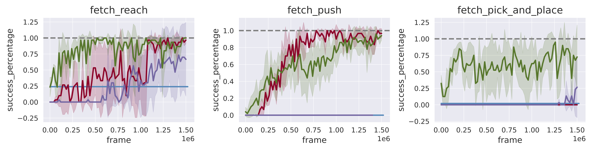
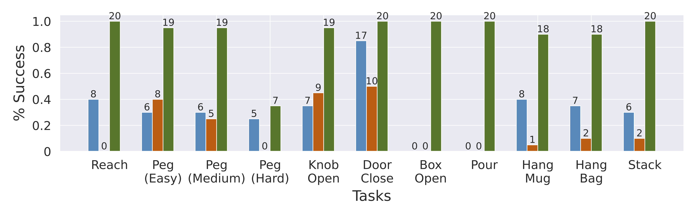

Abstract
Imitation learning holds tremendous promise in learning policies efficiently for complex decision making problems. Current state-of-the-art algorithms often use inverse reinforcement learning (IRL), where given a set of expert demonstrations, an agent alternatively infers a reward function and the associated optimal policy. However, such IRL approaches often require substantial online interactions for complex control problems. In this work, we present Regularized Optimal Transport (ROT), a new imitation learning algorithm that builds on recent advances in optimal transport based trajectory-matching. Our key technical insight is that adaptively combining trajectory-matching rewards with behavior cloning can significantly accelerate imitation even without task-specific rewards. Our experiments on 20 visual control tasks across the DeepMind Control Suite, the OpenAI Robotics Suite, and the Meta-World Benchmark, demonstrate an average of 8.7x faster imitation to reach 90% of expert performance compared to prior state-of-the-art methods. On real-world manipulation, with just one demonstration and an hour of online training, ROT achieves an average success rate of 89% across 12 tasks.
Real-World Results
We provide evaluation rollouts of ROT on a set of 12 real-world manipulation tasks. With just one demonstration and one hour of online training, ROT achieved an average sucess rate of 89% across 12 tasks. This is significantly higher than behavior cloning (30%) and adversarial IRL (13%) based approaches.
Method
Regularized Optimal Transport (ROT) is a new imitation learning algorithm that adaptively combines offline behavior cloning with online trajectory-matching based rewards (top). This enables signficantly faster imitation across a variety of simulated and real robotics tasks, while being compatible with high-dimensional visual observation. On our xArm robot, ROT can learn visual policies with only a single human demonstration and under an hour of online training.
Our main findings can be summarized as:
- ROT outperforms prior state-of-the-art imitation methods, reaching 90% of expert performance 8.7% faster than our strongest baselines on simulated visual control benchmarks.
- On real-world tasks, with a single human demonstration and an hour of training, ROT achieves an average success rate of 89% with randomized robot initialization and image observations. This is significantly higher than behavior cloning (30%) and adversarial IRL (13%) based approaches.
- ROT exceeds the performance of state-of-the-art RL trained with rewards, while coming close to methods that augment RL with demonstrations. Unlike standard RL methods, ROT does not require hand-specification of the reward function.
- Ablation studies demonstrate the importance of every component in ROT, particularly the role that soft Q-filtering plays in stabilizing training and the need for OT-based rewards during online learning.
Experiments
To demonstrate the effectiveness of ROT, we run extensive experiments on 20 simulated tasks across DM Control, OpenAI Robotics, and Meta-world, and 12 robotic manipulation tasks on an xArm. For DM Control, we measure the average episode reward. For OpenAI Robotics, Meta-world and the real-world xArm tasks, we measure the number of successful trajectories. Evaluations are over 10 trajectories for the simulated tasks and 20 trajectories for the real-world tasks. To reach 90% of expert performance, ROT is on average
- 8.9× faster on DeepMind Control tasks
- 2.37× faster on OpenAI Robotics tasks 
- 11.5× faster on Meta-world tasks
The performance of ROT on the real-world manipulation tasks is provided below.
Limitations and Future Work
In this work, we propose Regularized Optimal Transport (ROT), a new imitation learning algorithm that alleviates the challenge of exploration and significantly improves sample efficiency by using a pretrained policy in conjunction with an adaptive regularization scheme for online finetuning. We demonstrate superior performance compared to prior work on a varied set of simulated environments as well as a set of real-world manipulation tasks with just one demonstration and an hour of online training. However, there are a few limitations in this work: (a) Since our OT-based approach aligns agents with demonstrations without task-specific rewards, it relies on the demonstrator being an ‘expert’. Extending ROT to suboptimal demonstrations would be an exciting future direction. (b) Performing BC pretraining and BC-based regularization requires access to expert actions, which may not be present in real-world demonstrations from humans. Recent work on using inverse models to infer actions given observational data could alleviate this challenge. We look forward to future work that extends ROT to these scenarios with suboptimal demonstrations or unavailability of expert actions.